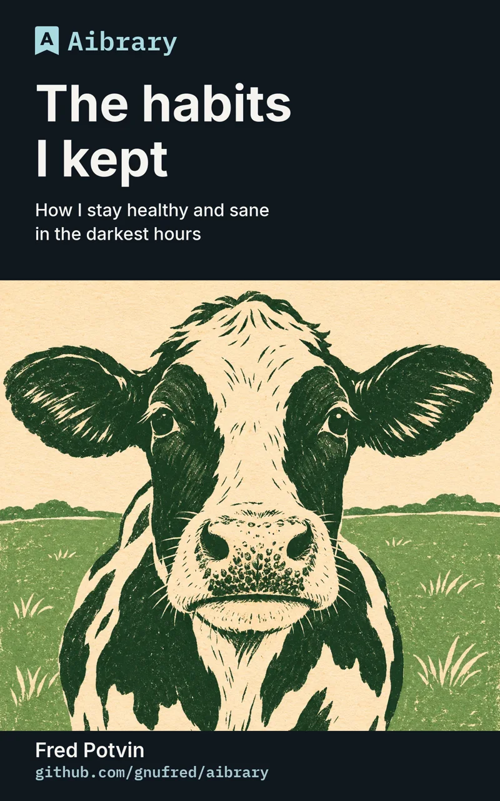

Health and habits
The habits I kept
How I stay healthy and sane in the darkest hours
The talk of AI takeovers and seeing fellow engineers lose their jobs seriously freaked me out. Breathing and a few habits I’d picked up over the years helped me get myself together. I wrote them down in case they help you too.
Download EPUB